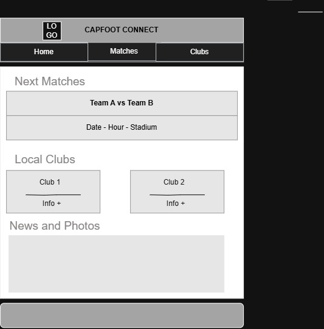

An interactive space where fans can discover clubs, connect, and stay informed about local competitions.
The site provides a hub for football in Cap-Haitian by offering match schedules, club profiles, results, and community interaction for local fans.
Primary Color: #1E3A8A (Deep Blue) – used for headings and navigation.
Secondary Color: #F59E0B (Golden Orange) – used for accents, highlights, and buttons.
Heading Font: Montserrat – clean and modern for titles.
Body Font: Roboto – easy to read for paragraphs and general content.

Placeholder